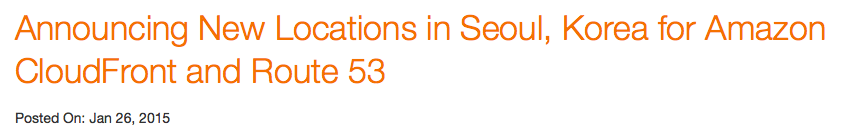
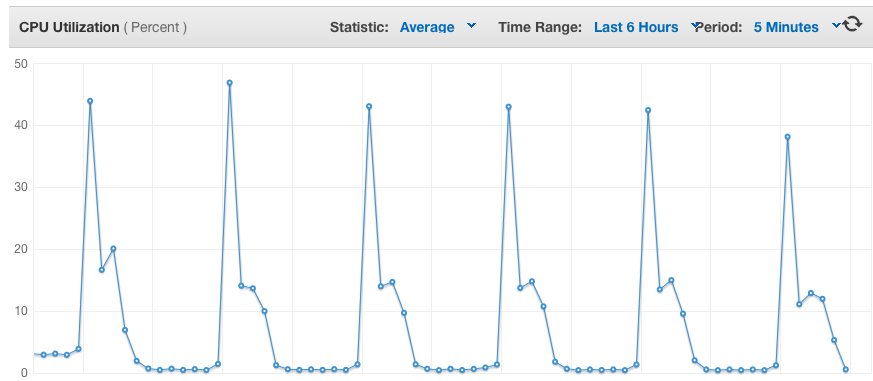

韓国ユーザーグループ(AWSKRUG)
特別セッション
JAWS DAYS 2016
- AWS韓国エバによるSeoul Regionアップデート (5分)
- AWSKRUGはじめに (10分)
- How to optimise cost in Startup with Spot Instances? (35分)
AWS韓国エバによるSeoul Regionアップデート
JAWS DAYS 2016
Channy Yun, AWS Korea Tech Evangelist / 鄭道鉉
Congraturation!
@awscloud_jp 皆様に支えられて、 AWS 東京リージョンは本日満5歳になりました！これからもAWSをどうぞよろしくお願いします。 
アジアパシフィック (ソウル)!
AWS Cloud 2016 - 1月7日2 アベイラビリティーゾーン
2 エッジロケーション
ソウルリージョンの開始前、韓国AWSの顧客は？
Minyoungさんが知らせていただきます!
韓国 スタートアップ顧客会社
迅速なサービスの開発、東京からソウルリージョン移行を検討中...
韓国 ゲーム顧客会社
上位の売上高の10社を使用、モバイルゲームの革新が可能
韓国 エンタープライズ顧客会社
低いネットワークレイテンシ、オンプレミスの移行、Direct Connectを活用
ソウルリージョン活用方法
- 韓国ユーザー対象サービス
- モバイルやメディア関連のテストベッド（高速インターネットの速度）
- ??
- ??
AWSKRUGはじめに
How to optimise cost in Startup with Spot Instances?
JAWS DAYS 2016
Minyoung Jeong(鄭敏泳) / Dohyun Jung(鄭道鉉)
発表者の紹介

Minyoung Jeong(鄭敏泳)
CTO, The Beatpacking Company
Founder, AWSKRUG
AWS Community Hero
Love Python, Ruby
Dohyun Jung(鄭道鉉)
Consultant, Mamezou
Host, iamprogrammer podcast
Staff, AWS Korea Community
Love Cloud computing, Data science
本日のアゼンダ
韓国AWSユーザグループのご紹介
韓国からのTokyo Region利用について
どうすればもっと安価で利用できるのか？
アマゾンウェブサービス 韓国ユーザ会
AWSKRUG
Tokyo Region 設立後、韓国からもAWSについて関心が 高まり始め、 2011年 11月 IRCから活動開始
2012年 2月フェースグックグループを開設後、 2016年3月現在、およそ 6,700人の会員が活動中
2015年 11月 Seoul Region ランチングで盛り上がり中！
重要活動
セミナー開催
re:Invent reCap
年 3~4回に会員発表セミナー開催
勉強会サポート
AWSに関心が高まり入門者急上昇中！
主に入門者向けの勉強家を開き、AWSクレジットなどをサポート
DevDay
AWS Koreaと一緒に開く技術セミナー
AWS 新製品紹介、ベスト・プラクティスの紹介など
awskr.org
BEAT
Ad-Supported Radio
韓国最初
2014年4月 Tokyo Regionからロンチング
660万加入者, MAU 200万
Series B
残念ながらまだ日本ではサービスしていませんT_T
ここで一問一答
なぜ日本を選択したのか?
AWSを使いたい!
当時の韓国はCo-location基盤のサービスがほとんど
APIを用いた自動化された管理といろんなサービを欲しがっていたから
ここで一問一答
Tokyo Regionでサービスするは問題なかったのか？
一般的に、韓国<->日本 Latencyは 50~80ms 程度
普通のMobile Appで許容可能なLatency
より良いUXのため、HTTP KeepAlive, GZipなどを 活用

2015. 01. 26 CloudFront Edge Launch
Cloudfrontの積極的な活用
Static resouce以外にも必要時APIもCloudfrontを通じて提供
Cloudfront & S3を通じて管理されるNetworkにてコンテンツを転送

Cloudfront edgeはソウルにありますが、Route53 edgeはない
CNAMEの代わりにALIASを活用
しかし…
日本はグローバルサービス(Twitter, Facebookなど)の 韓国サービスの拠点
ピークタイム(PM 10~AM 01)の海底ケーブル帯域幅の問題
幸いにも、AWSKRが韓国ISPたちと協力しネットワーク経路を管理
2016年現在、かなりうまく管理されている
ここで一問一答
Seoul Regionを利用する計画がありますか?
韓国国内でSeoul Regionに対しるLatencyは<10ms
ap-northeast-1 <-> ap-northeast-2で管理されるネットワーク
BEATでは必須のサービス一部が準備中
特にSpot Instanceが不在
Tokyoと平行して使う予定
一部のAPI、Cacheなどの機能を拡張する予定
BEATが考えたAWS利用の原則
適切な規模のリソースを利用する
必要最低限のリソースのみ利用する
必要最低限のリソースのみ利用する。
AutoScale + Spot Instance
EC2コストダウンの切り札Spot Instance

EC2の遊休資源をAvailability Zoneことのオークションを通じて利用
オークションを通じて利用するため、
インスタンスのライフサイクルを
任意で統制できない
ただし、On-Demand対比最大90%水準まで安価で利用可能
入札(Bid)戦力
どう入札すれば一番効率的なのか？

Availability Zoneごとに値段が異なる

Instance Typeごとに値段が異なる
특히, ap-northeast-1でどう入札すればいいのか？

特定Spikeを除いたらOn-Demandより安価で利用できる
BEATでは、On-Demand価格の100%で入札
入札価は最高価格なので、その時点の最低価で落札
公開したくないけと…(^^)
実はTokyoリージョンのSpot Instanceは競争が激しくない
今までは活用の幅がかなり広い
Spotがなかったら？
競売の価格が高すぎるか、遊休資源がない場合
Spot Instanceの確保ができない
安定的なサービス運営のためにこの場合どうすればよいのか?
AutoScale + Spot Instance
一つのELBに２個のAutoscale groupを運営
各グループはOn-Demand(RI)とSpot Instanceで設定される
CPUまたはLatencyを基準にてScale In/Out
On-Demand Groupは早いScale-In、遅いScale-Out
Spot Groupは早いScale-Out、遅いScale-In
CPU 基準
| Scale-In | Scale-Out | |
|---|---|---|
| Spot | 20%/1hr | 40%/5min |
| On-Demand | 40%/10min | 80%/5min |

時間帯別Traffic

Traffic最低点対比5~10%程をOn-Deamnd

他の部分を5~10%程度余裕でSpot Instance

もし、必要な分のSpot Instanceの確保が出来なかった場合

Scaling PolicyによってOn-DeamndがScale-Out
Scheduled Policy
サービスTraffic patternによって、
時間帯別にMinimumを調整
Peak時間帯のSpot: 40~ On-Deamdn: 10~
Off時間帯のSpot: 10~ On-Deamnd: 2~

または, 毎日Peak開始前に事前Warm-Upで利用
Wrap Up
- 適切なInstance Typeを利用
- 同じEC2の利用でもコストパフォマンスを考慮
- AutoScalingを通じた積極的にSpot-Instanceを使用
ありがとうございます!
- Q&A
- AWSKRUG
- kkungkkung @ gmail.com
Backup Slides
適切か規模のリソースを利用する
EC2 インスタンスの値段の差は800倍
適切なインスタンス Typeを選択することがすごく大事
Class (t,m,c,g,r,i,d) の特性
ウェブサーバ、Cacheサーバ、DBサーバに対し、異なるインスタンスタイプが必要
できれば、最新のインスタンスタイプを使うのがコストパフォマンスに有利
ただし、C3/C4, M3/M4の場合、もう一つの追加考慮事項が存在する
Instance-Storage vs EBS
C/Mの場合、第３世代まではInstance-Storageが
提供されるが、
第４世代からはEBSだけ提供される
第３世帯に提供されるInstance-Storageは1~2個のSSD
Instance-StorageはEBS対比7~10倍の性能
永続性がない代わりに性能と費用が抜群
データ複製などで永続性の問題を補完できる場合、
I/O性能が大事であれば第３世代の使用を考慮する必要がある

T2インスタンス
Burstがない、または予測可能なサービスに適用
CloudWatchなどを通じたCPU使用率モニタリングで適切なT2インスタンスへの転換を実施し、 2~30%程度のコストダウンが可能
特にM3/M4インスタンスに対して重点的に検討
Lambda
Image Resize, Encodingのような作業はインスタンスが通常待機する必要がない作業
Lambdaは100ms単位で課金するため必要時のみ運用すれば大幅のコストダウンが可能